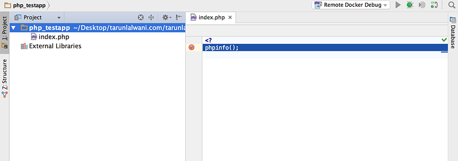

Debugging is an important aspect of any test environment. It helps developer troubleshoot their code on a deployed environment.
XDebug is one of the popular debuggers for PHP and many PHP IDEs have built-in support for XDebug.
Docker provides official images for php-fpm and nginx. php-fpm process all the PHP code and for client request handling we will use nginx.
In this article we will explore 2 approaches for using XDebug in a php-fpm + Nginx setup. Before we dive into these approaches, we first need to see how to setup a simple version
Setting up Nginx and PHP-FPM
We first write a docker-compose.yml file
version: '2'
services:
nginx:
image: nginx:latest
volumes:
- ./app.conf:/etc/nginx/conf.d/app.conf
- ./php_testapp:/var/www/html
ports:
- "8080:80"
php-fpm:
image: php-fpm:5.6-fpm
volumes:
- ./php_testapp:/var/www/html
The php_testapp folder has a simple index.php
php_testapp/index.php
<?php
phpinfo();
app.conf
server {
index index.php index.html;
server_name _;
error_log /var/log/nginx/error.log;
access_log /var/log/nginx/access.log;
root /var/www/html;
location ~ \.php$ {
try_files $uri =404;
fastcgi_split_path_info ^(.+\.php)(/.+)$;
fastcgi_pass php-fpm:9000;
fastcgi_index index.php;
include fastcgi_params;
fastcgi_param SCRIPT_FILENAME $document_root$fastcgi_script_name;
fastcgi_param PATH_INFO $fastcgi_path_info;
}
}
We get the environment up and running using docker-compose up -d and then browse to http://<dockerhost>:8080/ to test our setup. If all works well you will see a PHP Info page
Now let us look at both the approaches one by one
Approach 1 - Using Fixed IP
First we need to install XDebug into the php-fpm image as it doesn’t come as a part of the official image
Dockerfile
FROM php:5.6-fpm
RUN pecl install xdebug-2.5.3 \
&& docker-php-ext-enable xdebug
COPY 99-xdebug.ini /usr/local/etc/php/conf.d/
We add 99-xdebug.ini which contains settings for XDebug
99-xdebug.ini
xdebug.remote_enable=0
xdebug.remote_host=remotehost
xdebug.remote_handler=dbgp
xdebug.remote_port=9009
xdebug.remote_autostart=0
xdebug.remote_log=/tmp/xdebug.log
Note: The official port for XDebug is
9000, but since we are runningphp-fpmwhich also runs on 9000 port, I prefer running XDebug on9009
Now we update our app.conf to update some of the XDebug settings through fastcgi_param
app.conf
server {
index index.php index.html;
server_name _;
error_log /var/log/nginx/error.log;
access_log /var/log/nginx/access.log;
root /var/www/html;
location ~ \.php$ {
try_files $uri =404;
fastcgi_split_path_info ^(.+\.php)(/.+)$;
fastcgi_pass php-fpm:9000;
fastcgi_index index.php;
include fastcgi_params;
fastcgi_param SCRIPT_FILENAME $document_root$fastcgi_script_name;
fastcgi_param PATH_INFO $fastcgi_path_info;
fastcgi_param PHP_VALUE "xdebug.remote_autostart=1
xdebug.remote_enable=1
xdebug.remote_host=192.168.0.104";
}
}
We would also update our docker-compose.yml to build our Dockerfile instead of using the official image
version: '2'
services:
nginx:
image: nginx:latest
volumes:
- ./app.conf:/etc/nginx/conf.d/app.conf
- ./php_testapp:/var/www/html
ports:
- "8080:80"
php-fpm:
build: .
volumes:
- ./php_testapp:/var/www/html
192.168.0.104 in this case is my machine’s IP. This IP needs to be reachable from the main docker host machine
We have enabled remote_autostart and remote_enable through Nginx config instead in our docker image using 99-xdebug.ini. Doing so gives us better control over switching XDebug on and off.
Since we may debug from different network setup (home, office), the IP would need to be changed according to the network. This would require a reload or restart of the nginx server using docker-compose restart nginx
This approach is very simplistic, doesn’t have much overhead, except updating IP.
Approach 2 - Using SSH and Reverese Tunneling
In this approach we first setup ssh in the php-fpm image. Since we will be running sshd
and php-fpm both, we would run them using Supervisor
First thing we do is update our Dockerfile to install ssh and set password for our root account. The code is inspired from here
Dockerfile
FROM php:5.6-fpm
RUN pecl install xdebug-2.5.3 \
&& docker-php-ext-enable xdebug
COPY 99-xdebug.ini /usr/local/etc/php/conf.d/
RUN apt update && apt install -y openssh-server supervisor
RUN mkdir /var/run/sshd
RUN sed -i -e 's/PermitRootLogin without-password/PermitRootLogin yes/' -e '/AuthorizedKeysFile/s/^# *//' -e '/UsePrivilegeSeparation/s/yes/no/' /etc/ssh/sshd_config
RUN echo 'root:mypassword' | chpasswd
#RUN mkdir /root/.ssh && ssh-keygen -t rsa -P "" -C "SSH Client Key for XDebug" -f /root/.ssh/xdebug_client && cat /root/.ssh/xdebug_client.pub >> /root/.ssh/authorized_keys
COPY supervisor_app.conf /etc/supervisor/conf.d/
RUN sed 's@session\s*required\s*pam_loginuid.so@session optional pam_loginuid.so@g' -i /etc/pam.d/sshd
EXPOSE 80 443 22
CMD ["supervisord", "-n"]
Note: It is possible to use key based authentication instead of password based. I have left the code commented, if you are interested to do the same
To run php-fpm and sshd we also create a supervisor_app.conf
supervisor_app.conf
[program:php-fpm]
command=php-fpm
[program:sshd]
command=/usr/sbin/sshd -D
docker-compose.yml
We make a small change in our docker-compose.yml to map 22 port
version: '2'
services:
nginx:
image: nginx:latest
volumes:
- ./app.conf:/etc/nginx/conf.d/app.conf
- ./php_testapp:/var/www/html
ports:
- "8080:80"
php-fpm:
build: .
volumes:
- ./php_testapp:/var/www/html
ports:
- "2222:22"
We also update our nginx app.conf file and change the xdebug.remote_host to localhost
app.conf
server {
index index.php index.html;
server_name _;
error_log /var/log/nginx/error.log;
access_log /var/log/nginx/access.log;
root /var/www/html;
location ~ \.php$ {
try_files $uri =404;
fastcgi_split_path_info ^(.+\.php)(/.+)$;
fastcgi_pass php-fpm:9000;
fastcgi_index index.php;
include fastcgi_params;
fastcgi_param SCRIPT_FILENAME $document_root$fastcgi_script_name;
fastcgi_param PATH_INFO $fastcgi_path_info;
fastcgi_param PHP_VALUE "xdebug.remote_autostart=1
xdebug.remote_enable=1
xdebug.remote_host=localhost";
}
}
Now that we have everything set, we just need to run the composition again using docker-compose up -d.
The reason we set xdebug.remote_host as localhost is that we would use SSH reverse tunnel to map any traffic on port 9009 of our docker container to reach our machine directly.
To create a reverse ssh tunnel, run the below command
ssh -R 127.0.0.1:9009:127.0.0.1:9009 -p 2222 root@<dockerhostip>
Note: The password in our case is
mypassword
Once the tunnel is open, if you configure your IDE to listen on port 9009 and open the url http://<dockerhostip>:8080/ on your machine, the debugger should pause on index.php code as shown below
Note: This is not a recommended approach for production deployments. You don’t want to allow SSH inside containers in a prod environment. Anyways if you are debugging on production, then it really doesn’t make much sense. But sometimes that may be the need of hour, in that case use Approach 1. This approach is best suited where multiple developers would be debugging the code and changing IP everytime might be a pain

You can download the code for this article from tarunlalwani/php-xdebug-docker